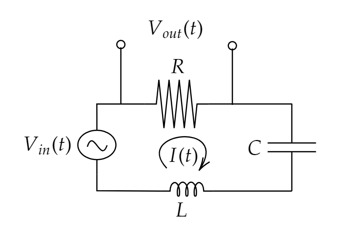

מעגלי RLC#
בניית פילטר רדיו#
המטרה עכשיו היא להצליח לתכנן מסנן אנלוגי לקליטה של גלגלץ
איך נראה המעגל שלנו? 
כמו במעגל RC נרשום:
ונעבור למרחב התדר
נשים לב שבמעגל יש תדר רזוננס בו אין הפרש פאזה בין המתח לזרם (למה זה? רמז, הספק). זהו התדר אשר בו אנחנו מקבלים אימפדנס ממשי כלומר:
נראה את זה בגרף
לפתיחה בחלון נפרדנסתכל על קצת גבולות של פונקציית התמסורת:
\(\tilde{H}\left(0\right)=0\)
\(\tilde{H}\left(\omega\right)\underset{\omega\ll\frac{R}{L},\frac{1}{RC},}{\underbrace{\approx}}RC\cdot i\omega\) - קיבלנו מעגל גזירה עם הקבל והנגד
\(\tilde{H}\left(\omega\right)\underset{\frac{1}{RC},\frac{R}{L}\ll\omega}{\underbrace{\approx}}\frac{R}{L}\frac{1}{i\omega}\) - קיבלנו מעגל אינטגרציה עם הסליל והנגד
בסרטוט רשום רוחב סרט שמחושב כרוחב הפונקציה עבור ירידה של התמסורת \(\sqrt{2}\) בגובה. זה מקביל לירידה של חצי בהספק. זה מה שנקרא רוחב סרט בירידה של 3dB כלומר:
בתרגיל תחשבו את רוחב הסרט כלומר לפתור בקירוב את המשוואה:
כאשר חשוב לשים לב ש:\(\tilde{H}\left(\omega_{res}\right)=1\)
מקבלים כי:
לדוגמה עבור הרדיו שלנו נרצה כי \(\omega_{0}=2\pi f_{0}=576.8\cdot10^{6},\Delta\omega=628\cdot10^{3}\)
נבחר באופן שרירותי כי \(C=1nF\)
הקבלה לאוסילטור הרמוני#
מעגל RLC טורי מזכיר אוסילטור הרמוני ולא סתם. הוא נראה מה ההקבלה:
מעגל RLC |
אוסילטור הרמוני |
|---|---|
\(F\left(t\right)=kx+\gamma\dot{x}+m\ddot{x}\) |
\(V_{in}\left(t\right)=\frac{1}{C}q+R\dot{q}+L\ddot{q}\) |
\(V_{in}\left(t\right)\) |
\(F\left(t\right)\) |
\(q\left(t\right)\) |
\(x\left(t\right)\) |
\(I\left(t\right)\) |
\(\dot{x}\left(t\right)\) |
\(\frac{1}{C}\) |
\(k\) |
\(L\) |
\(m\) |
\(R\) |
\(\gamma\) |
Q-factor#
במעגל שעושה Band Pass Filter (BPF) יש שני מספרים חשובים \(\omega_{0}\) (לפעמים יסומן כ-\(\omega_{res}\)) ו-\(\Delta\omega\) אשר קובעים את טיב הפילטר ליחס בינהם יש שם מיוחד:
אתם יכולים לחשוב על זה בתור “צרות יחסית” או תוכלת חלקי סטיית תקן עבור משתנים סטטיסטים.
לדוגמא עבור רדיו FM נקבל כי:
נשים לב שערך ה-Q חייב להתאים לצורך:
במקלט רדיו כדי שיהיה לנו \(Q\approx10^{3}\)
אם אנחנו רוצים מערכת רחבת סרט אנחנו חייבים לקבל \(Q<1\)
למשל ברמקול אנחנו רוצים \(\omega_{0}=2\pi\cdot\underset{10KHz}{\underbrace{10^{4}}},\Delta\omega=2\pi\cdot\underset{20KHz}{\underbrace{20\cdot10^{3}}}\) ולכן נקבל כי \(Q=\frac{1}{2}\)
במעגל RLC טורי נקבל כי:
תגובה להלם של מעגל RLC ומספר אוסילציות בזמן מחזור#
עשינו כבר את ההקבלה לאוסילטור הרמוני ולכן נוכל לנחש יחסית בקלות כי:
ננסה להבין מה הם שלושת הקבועים שלנו:
נדרוש שהקבועים יתנו לנו את פונקציית התמסורת שאנחנו מכירים ולכן:
כלומר קיבלנו שהסינוס לא מתנדנד בדיוק בתדר הרזוננס אבל עבור שיכוך מספיק קטן זה כן נכון. בנוסף קיבלנו כי הפונקצייה דועכת בקצב אופייני של \(\tau=\frac{2L}{R}\) נשים לב לעובדה חשובה. בחישוב של פונקציית התמסורת הסינוס רק נתן את שני השכפולים בשני הצדדים בעוד “צורת” הפונקצייה קיבלנו מהפונקצייה \(\theta\left(t\right)e^{-\frac{t}{\tau}}\) שקבעה את הרוחב נשים לב שהפורייה שלה בערך מוחלט הוא:
כלומר היא יורדת לחצי גובה עבור: \(\omega_{\pm}=\frac{1}{\tau}\Rightarrow\Delta\omega\approx2\frac{1}{\tau}=\frac{R}{L}\) יבלנו בדרך נוספת את העבודה שהרוחב הוא שאנחנו מצפים.
בנוסף אם יש שיכוך קטן נקבל כי הפונקצייה מתנדנדת בתדר \(\omega_{D}\approx\omega_{0}=\frac{1}{\sqrt{LC}}\)ולכן נקבל כי:
קיבלנו עוד “הגדרה” ל-Q אשר אומרת שהוא מתאר (עד כדי פקטור) את מספר האוסילציות שהתגובה להלם עושה לפני שהיא דועכת. אנחנו יכולים לשים לב שאם אנחנו רוצים מערכת “רחבת סרט” אנחנו צריכים Q נמוך כלומר מערכת שנמצאת בריסון משמעותי.
הגדרה אנרגטית ל-Q factor#
ישנה הגדרה נוספת ל-Q-factor אשר מגיע מאנרגיה:
נסתכל שוב על תגובת המעגל להלם נשים לב שבמעגל המתח על הקבל תמיד בהפרש פאזה של \(\frac{\pi}{2}\) ביחס לזרם (רמז - אימפדנס של קבל). ולכן כאשר הזרם מקסימלי המתח הוא אפס וכל האנרגיה אגורה בסליל. לכן נוכל לרשום: